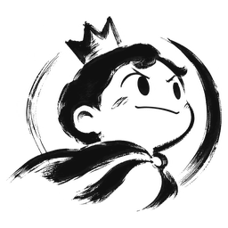
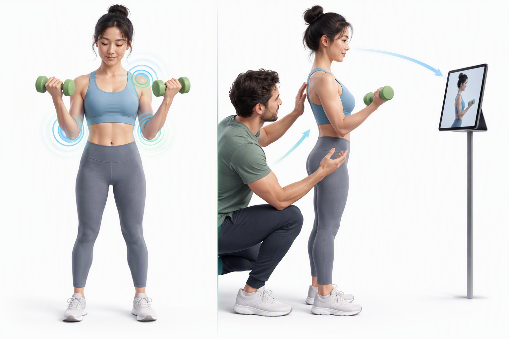
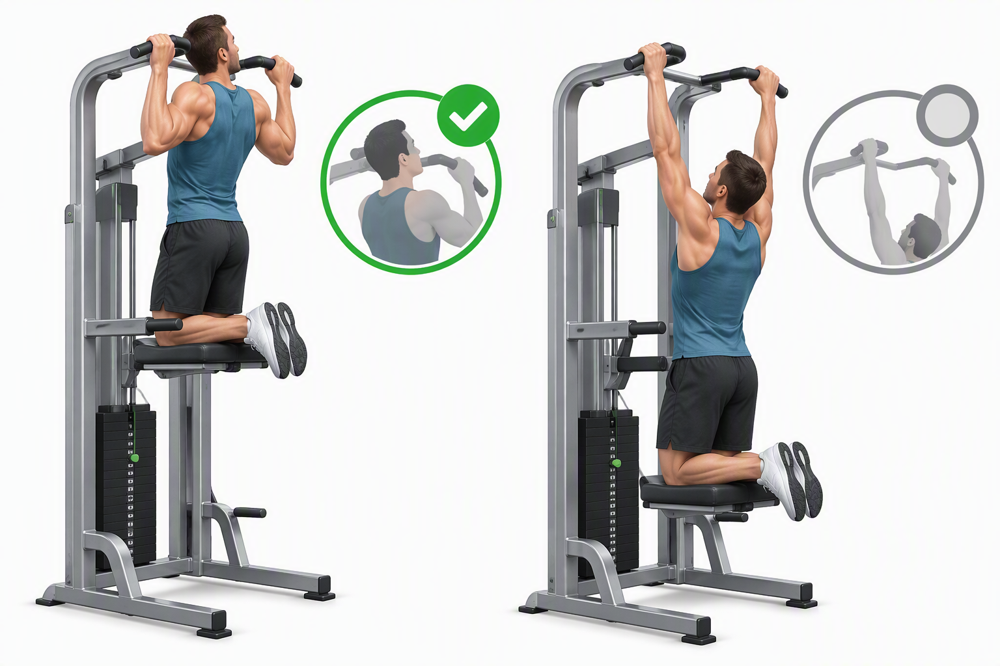
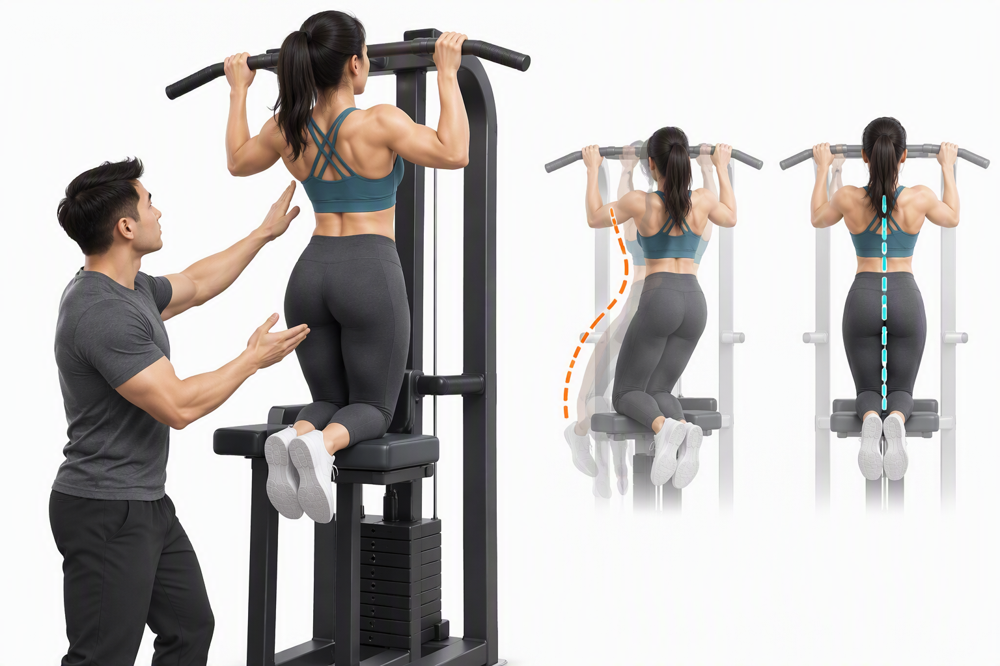
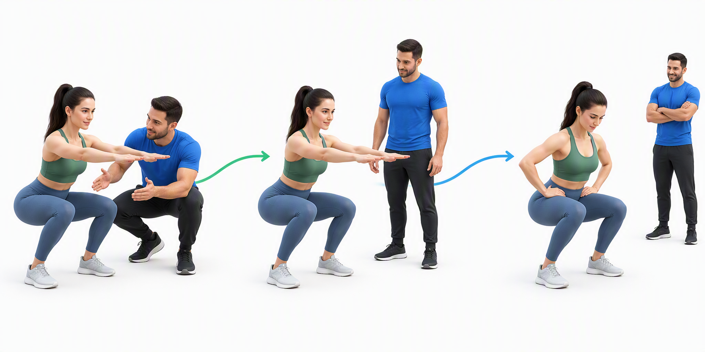
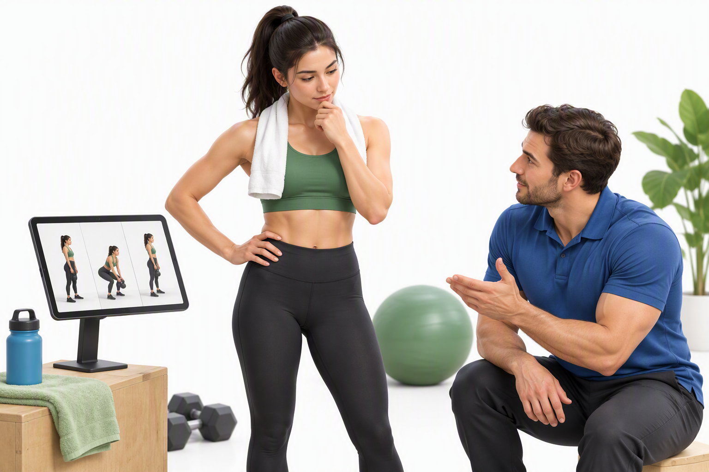
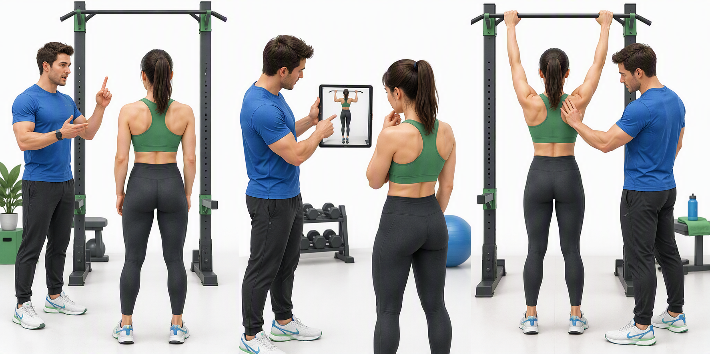
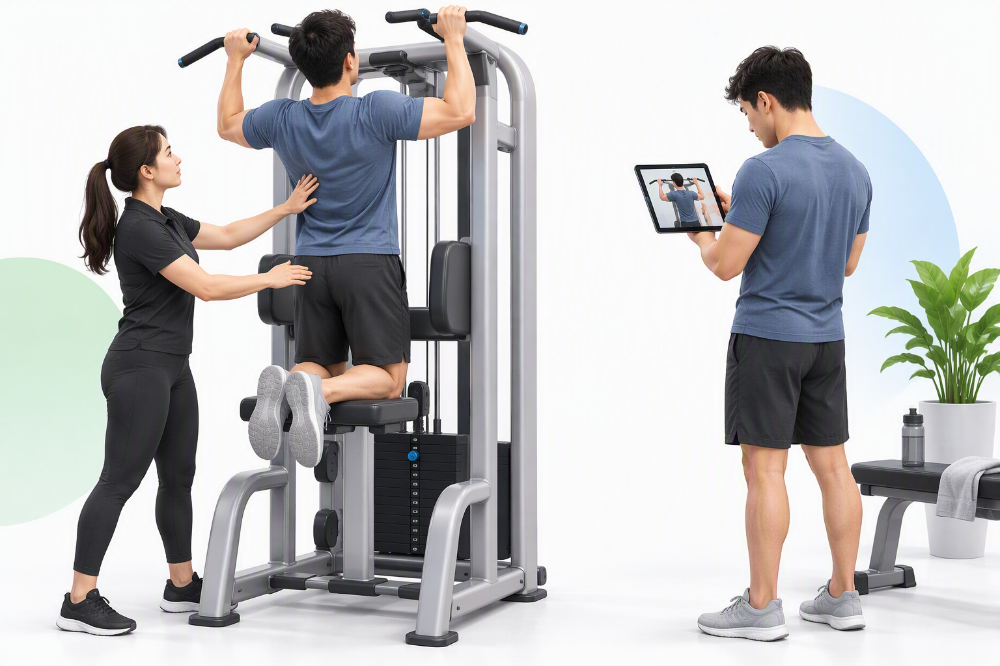

双证双证
01
先把三个维度分清
来源看内在与外在，内容看KR与KP，方式看言语、视觉与动觉。不要把它们当成一组互斥选项。

双证
02
内在与外在：信息从哪来
自己的身体感觉和教练追加的信息，可以相互校准，但不是同一个来源。

内在反馈
- 动作本身产生的位置、用力、接触和晃动感
- 本体感觉与视觉、前庭等感觉共同帮助控制
- 有感觉不等于动作一定正确，还需要校准
外在反馈
- 教练、镜面、视频和测量设备提供追加信息
- 例如教练指出：刚才上拉时躯干向后摆动
- 它能补充自己暂时没有察觉的偏差
训练怎么用
- 先问学习者刚才感受到什么，再补关键观察
- 帮助他把感觉和实际表现对应起来
- 目标是逐步独立判断，而不是永远等口令
双证
03
KR：有没有达到目标
Knowledge of Results，结果反馈。先明确目标，再报告完成情况或偏差。

核心含义
- 关注动作结果与任务目标之间的关系
- 可以是成功与否，也可以是次数、距离或时间
- 像成绩单，但不一定解释身体怎样运动
训练例子
- 目标完成5次，反馈：这一组完成了4次
- 目标终点明确，反馈：这次达到了终点
- 没有清楚标准的“不错”，信息通常太模糊
不要混淆
- KR不是表扬，也可以报告未完成目标
- 有没有数字，不是唯一分类依据
- 需要修正动作时，可以再配一条关键KP
双证
04
KP：动作是怎样完成的
Knowledge of Performance，表现反馈。关注过程、协调和技术质量。

核心含义
- 描述刚才身体怎样完成任务
- 例如：上拉时躯干明显后摆，回程突然放松
- 比一句“姿势不对”更具体、更容易检验
和KR搭配
- 这次完成了目标：KR
- 但回程最后一段失去控制：KP
- 一次只抓一个主要问题，别同时堆很多纠错
反馈与口令有区别
- “刚才回程失控”是在描述已发生的动作
- “下一次控制回程”是面向下一次的指导
- 不是所有训练前口令都属于反馈
双证
05
反馈频率：帮助逐步减少
当场做得顺，不一定学得牢。随着表现稳定，给自我判断留出空间。

为什么会依赖
- 每次立刻得到答案，可能减少自我识别误差的机会
- 撤掉口令后明显退步，要检查提示依赖
- 当场表现与长期学习不能画等号
逐步消退：Fading
- 先处理安全与主要错误，稳定后减少即时提示
- 可改成若干次后总结，或先让学习者自评
- 不机械规定所有人都按同一百分比递减
调整依据
- 看任务难度、动作稳定性和学习者反馈
- 新任务或明显退步时可以暂时增加帮助
- 减少提示不等于放弃安全观察与及时制止
双证
06
反馈时机：先感知，再校准
让学习者回顾刚才的感觉，再提供一条清楚、能用于下一次尝试的信息。

动作中与动作后
- 动作中提示可及时引导，也可能增加注意负担
- 动作后更方便回顾感觉和观看视频
- 承重或悬吊中不要为了看屏幕而分心
一个简洁顺序
- 先问：刚才哪一段最不稳定？
- 再补一条关键观察，约定下次关注什么
- 不是机械等待固定秒数，也不是一次纠正全部
安全优先
- 疼痛、明显失控或器械问题，先停止和调整
- 负荷过大时，减少难度比加口令更重要
- 不为等待自纠错而容忍危险重复
双证
07
三种暗示：说、看、感受
言语、视觉、动觉是传达方式；KR、KP是信息内容，两条分类轴不要混。

言语暗示
- 一句简洁、可执行的提示，抓一个主要目标
- 练习前口令是指导，不一定是反馈
- 练习后可用语言报告KR，也可描述KP
视觉暗示
- 用示范、镜面或视频，让学习者看清关键特征
- 看是否完成目标，是KR；看动作过程，是KP
- 媒介是视频，不代表内容一定属于KP
动觉暗示
- 用安全、低负荷的姿势体验帮助定位
- 触碰前先说明目的并取得明确同意
- 不在悬吊中突然触碰，不强推身体到指定位置
双证
08
训练里怎么用：辅助引体
先选能控制的难度，再观察、反馈和复练。不要用更多口令替代负荷调整。

开始前
- 设定清楚的目标范围和合适辅助量
- 给一个简短提示，确认学习者听懂
- 涉及触碰时先征得同意，在稳定姿态下进行
尝试后
- 先自评：刚才哪一段最难控制？
- KR：是否达成目标；KP：过程有什么关键偏差
- 只约定一项调整，再做相近难度的尝试
稳定以后
- 逐步减少即时提示，观察能否独立完成
- 下次训练再看保留情况，不只看当场表现
- 疼痛或失控时先停止，必要时寻求专业评估